レイドボス 2026～
2026年10月22日実装。1日1回、日替わりのボスに挑戦するレイドです。
新ボス「ソメル・ノチェス」と、ボスごとの討伐ポイントに応じた月間報酬が追加されました。
参加方法
冒険家協会バーのユスピナ（44,45）から申請できます。
F1の「統合ガイド」→「レイド」からユスピナのもとへ移動できます。
| 項目 | レイド共通 |
|---|---|
| クリア回数 | 1日1回。クリア時に回数を消費 |
| リセット | 毎日0時 |
| 申請 | 1時間ごと。出発時刻の2分前から申請不可 |
| 入場待機区域 | 冒険家協会バー（21,36）／（27,30） |
| 推奨レベル | Lv900 |
| 最少参加人数 | 5人 |
| 必要転生回数 | なし |
| 制限時間 | 30分 |
| 確定報酬 | 紛失した冒険団ボックス |
- ユスピナで参加する時間を選び、討伐を申し込みます。
- 出発時刻までに、冒険家協会バーの入場待機区域へ移動します。
- レイドボスを討伐すると、クリア報酬と討伐ポイントを獲得できます。
申込画面の見方

右側の「申し込み」タブで、開始時間と参加人数を確認して予約します。予約後は「取り消し」でキャンセルできます。
右下の3つのボタンは、左から次の機能です。
| ボタン | 使い方 |
|---|---|
 宝箱 | レイド報酬画面を開きます。討伐ポイントや、受け取れる報酬を確認できます。 |
 笛 | パーティーメンバーを該当の場所へ呼び出すときに使います。 |
 ランキング | 右端の四角いボタンです。ランキングを表示します。 |
日替わりボス
出現ボスは全サーバー共通で、ケルベロス→骸骨王→ドラゴート→ソメル・ノチェスの順に切り替わります。
| 出現順 | ボス | 出現日の例（2026年） |
|---|---|---|
| 1 | ケルベロス | 10月27日、10月31日 |
| 2 | 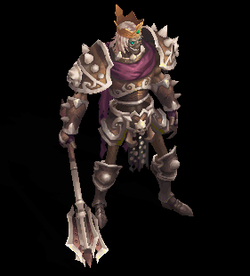 骸骨王 | 10月28日、11月1日 |
| 3 | 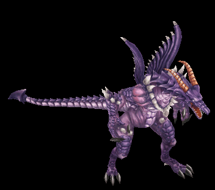 ドラゴート | 10月29日、11月2日 |
| 4 | ソメル・ノチェス | 10月30日、11月3日 |
ケルベロス・骸骨王・ドラゴートはLv700です。
レイドボスの討伐攻略
ケルベロス
戦闘中に暴走し、強力になるフェーズがあります。楽器の演奏が止まると、周囲に妨害モンスターが出現します。
- 楽器の周囲に出現したモンスターを討伐します。
- 楽器をクリックして演奏を再開し、ギミックを解除します。状況に応じて1つ以上の楽器を演奏します。
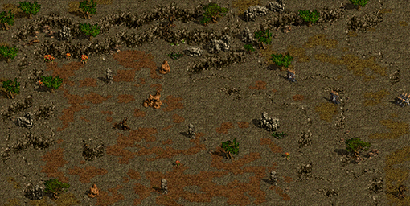
骸骨王
HPが一定割合以下になるたびに、アンデッドの配下を召喚します。
- 召喚された配下はフィールド中央へ向かって移動します。
- 中央に到達する前にすべて倒すと、配下によるダメージを防げます。
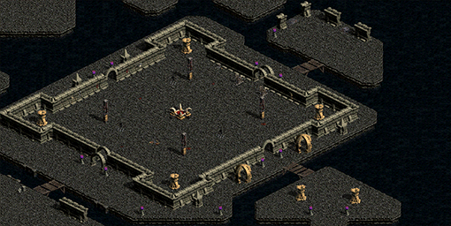
ドラゴート
特定のフェーズで無敵状態になり、祭壇と配下モンスターが出現します。戦闘前に祭壇の位置を確認しておくと、移動先を把握できます。
- 配下モンスターを討伐し、祭壇の非活性化に必要なアイテムを獲得します。
- 条件を満たして祭壇をクリックすると、ドラゴートの無敵状態を解除できます。
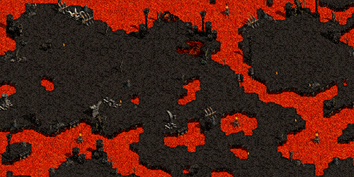
ソメル・ノチェス

「宝石の島」に出現するレイドボス。魔法を扱うゴーレムで、「ジュエルレイン」「ジュエルミスト」などの広域スキルを使用します。
レイド報酬
ボスを1回討伐すると1ポイント。各ボスは月3ポイントまで、4種類で合計12ポイントです。
レイド報酬画面の見方

左側には各ボスの討伐ポイントが「0/3」のように表示され、右側に4体分の合計が表示されます。
1か月の間に4種類を3回ずつ討伐すると、3ポイント×4体＝12ポイント。最上位のプラチナレイドBOXを翌月に受け取れるようになります。
クリア報酬
レイドをクリアすると、 紛失した冒険団Boxと経験値を獲得できます。
| 紛失した冒険団Boxから出現するアイテム | 個数 |
|---|---|
| 1～3個 | |
| 試練のクリスタル | 1～3個 |
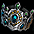 修復済みタティリス遺跡の出土品 | 1～5個 |
| 1～3個 | |
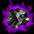 深淵の黒曜石 | 1～3個 |
各報酬については等倍の確率で出現します。
紛失した冒険団Boxは取引不可です。
戦利品
ケルベロス・骸骨王・ドラゴートは、1回の討伐につき30％の確率で対応する戦利品をドロップします。
| ボス | 戦利品 |
|---|---|
| ケルベロス | 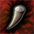 ケルベロスの牙 |
| 骸骨王 | 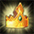 骸骨王の王冠 |
| ドラゴート | ドラゴートの翼 |
戦利品を3種すべて集めると、 一流討伐団のバッジと交換できます。
紛失した冒険団Box3個とも交換可能です。
| アイテム | 効果 |
|---|---|
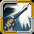 一流討伐団のバッジ | すべてのスキルレベル +2 回避率 +2％ 攻撃速度 +4％ インベントリに持っているだけで効果適用。バッジ個数にカウントしない |
Box・戦利品・一流討伐団のバッジは銀行保管不可、有効期限なし。
最大ポイント達成報酬
各ボスを月3回討伐すると、ボスごとに 欲張りレビットのクリスタルを1個獲得できます。
レイド報酬画面のアイテムをクリックして受け取ります。4種類すべて達成すると月4個です。
当月中に受け取ってください。毎月1日にリセットされ、前月分は受け取れません。
| キャラクターレベル | 所持してレイドをクリアした時の経験値 |
|---|---|
| Lv1～849 | 3倍 |
| Lv850～1999 | 10倍 |
| Lv2000以上 | 経験値を獲得せず、クリスタルが消滅 |
クリスタルはレイドクリア時に消費されます。取引不可・販売不可、最大所持数100個。
月間累計ポイント報酬
前月の累計ポイントに応じた報酬を、翌月1日から月末まで受け取れます。
申込画面右下の宝箱からレイド報酬画面を開き、右側の「先月報酬受取」をクリックすると、インベントリに支給されます。

| 等級 | 前月の ポイント | 報酬BOX | BOXの中身 | スクロールの経験値 （30日換算の日平均） |
|---|---|---|---|---|
| ブロンズ | 1～4 | 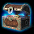 ブロンズレイドBOX | 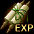 ブロンズ経験値スクロール 1個 | 100億 1日約3.3333億 |
| シルバー | 5～8 | 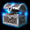 シルバーレイドBOX | シルバー経験値スクロール 1個 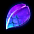 最下級ミルの鱗 10個 | 500億 1日約16.6667億 |
| ゴールド | 9～11 | ゴールドレイドBOX | 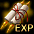 ゴールド経験値スクロール 1個最下級ミルの鱗 5個 | 1,000億 1日約33.3333億 |
| プラチナ | 12 | プラチナレイドBOX | プラチナ経験値スクロール 1個 | 3,000億 1日100億 |
経験値スクロールの対象はLv1～1999。報酬BOX・経験値スクロール・ミルの鱗は取引不可・銀行取引不可・販売不可です。
最大所持数は報酬BOXが10個、経験値スクロールとミルの鱗が100個です。
毎日1回クリアした場合の経験値
30日ある月に月初から毎日1回クリアし、翌月のプラチナ経験値スクロール3,000億まで受け取った場合。同じレベル帯で計算しています。
月4個の欲張りレビットのクリスタルを使う場合は4回分、それ以外の26回は通常またはユスピナのクリスタルで計算します。
| Lv | クリスタルなし 30回 | 欲張りレビットのクリスタル4回 ＋通常26回 | ユスピナのクリスタル30回 | ユスピナのクリスタル26回 ＋ 欲張りレビットのクリスタル4回 |
|---|---|---|---|---|
| 1～49 | 3,000.225億 1日100.0075億 | 3,000.285億 1日100.0095億 | 3,000.45億 1日100.015億 | 3,000.48億 1日100.016億 |
| 50～99 | 3,001.65億 1日100.055億 | 3,002.09億 1日約100.0697億 | 3,003.3億 1日100.11億 | 3,003.52億 1日約100.1173億 |
| 100～199 | 3,009億 1日100.3億 | 3,011.4億 1日100.38億 | 3,018億 1日100.6億 | 3,019.2億 1日100.64億 |
| 200～299 | 3,018.75億 1日100.625億 | 3,023.75億 1日約100.7917億 | 3,037.5億 1日101.25億 | 3,040億 1日約101.3333億 |
| 300～399 | 3,038.25億 1日101.275億 | 3,048.45億 1日101.615億 | 3,076.5億 1日102.55億 | 3,081.6億 1日102.72億 |
| 400～449 | 3,081億 1日102.7億 | 3,102.6億 1日103.42億 | 3,162億 1日105.4億 | 3,172.8億 1日105.76億 |
| 450～499 | 3,085.5億 1日102.85億 | 3,108.3億 1日103.61億 | 3,171億 1日105.7億 | 3,182.4億 1日106.08億 |
| 500～549 | 3,090億 1日103億 | 3,114億 1日103.8億 | 3,180億 1日106億 | 3,192億 1日106.4億 |
| 550～599 | 3,099億 1日103.3億 | 3,125.4億 1日104.18億 | 3,198億 1日106.6億 | 3,211.2億 1日107.04億 |
| 600～649 | 3,108億 1日103.6億 | 3,136.8億 1日104.56億 | 3,216億 1日107.2億 | 3,230.4億 1日107.68億 |
| 650～699 | 3,126億 1日104.2億 | 3,159.6億 1日105.32億 | 3,252億 1日108.4億 | 3,268.8億 1日108.96億 |
| 700～749 | 3,135億 1日104.5億 | 3,171億 1日105.7億 | 3,270億 1日109億 | 3,288億 1日109.6億 |
| 750～799 | 3,153億 1日105.1億 | 3,193.8億 1日106.46億 | 3,306億 1日110.2億 | 3,326.4億 1日110.88億 |
| 800～849 | 3,180億 1日106億 | 3,228億 1日107.6億 | 3,360億 1日112億 | 3,384億 1日112.8億 |
| 850～874 | 3,405億 1日113.5億 | 3,891億 1日129.7億 | 5,430億 1日181億 | 5,646億 1日188.2億 |
| 875～899 | 3,900億 1日130億 | 4,980億 1日166億 | 8,400億 1日280億 | 8,880億 1日296億 |
| 900～919 | 4,200億 1日140億 | 5,640億 1日188億 | 10,200億 1日340億 | 10,840億 1日約361.3333億 |
| 920～999 | 4,200億 1日140億 | 5,640億 1日188億 | 10,200億 1日340億 | 10,840億 1日約361.3333億 |
| 1000～1999 | 3,600億 1日120億 | 4,320億 1日144億 | 6,600億 1日220億 | 6,920億 1日約230.6667億 |
月合計と1日平均を記載しています。1日平均は小数第4位まで表示しています。スクロールは翌月受け取りのため、当月中に入るクリア経験値とは受取時期が異なります。
例えばLv1000～1999では、クリスタルなしで月3,600億、1日平均120億。配布の欲張りレビット4個も使うと月4,320億、1日平均144億です。
クリア時経験値一覧
| Lv | 経験値 | ユスピナのクリスタル使用時 | 欲張りレビットのクリスタル使用時 |
|---|---|---|---|
| 1～49 | 75万 | 150万 | 225万 |
| 50～99 | 550万 | 1100万 | 1650万 |
| 100～199 | 3000万 | 6000万 | 9000万 |
| 200～299 | 6250万 | 1.25億 | 1.875億 |
| 300～399 | 1.275億 | 2.55億 | 3.825億 |
| 400～449 | 2.7億 | 5.4億 | 8.1億 |
| 450～499 | 2.85億 | 5.7億 | 8.55億 |
| 500～549 | 3億 | 6億 | 9億 |
| 550～599 | 3.3億 | 6.6億 | 9.9億 |
| 600～649 | 3.6億 | 7.2億 | 10.8億 |
| 650～699 | 4.2億 | 8.4億 | 12.6億 |
| 700～749 | 4.5億 | 9億 | 13.5億 |
| 750～799 | 5.1億 | 10.2億 | 15.3億 |
| 800～849 | 6億 | 12億 | 18億 |
| 850～874 | 13.5億 | 81億 | 135億 |
| 875～899 | 30億 | 180億 | 300億 |
| 900～919 | 40億 | 240億 | 400億 |
| 920～999 | 40億 | 240億 | 400億 |
| 1000～1999 | 20億 | 120億 | 200億 |
スフィアの所持に関係なく経験値は固定です。
ユスピナのクリスタルはLv1～849で2倍、Lv850～1999で6倍。欲張りレビットのクリスタルはLv1～849で3倍、Lv850～1999で10倍です。
Lv2000以上は、各クリスタルを所持してクリアしても経験値を獲得せず、クリスタルが消滅します。
備考
- 同一IDで予約できるのは1キャラクターのみです。
- 該当時間に5人以上の申し込みがあると入場できます。定期メンテナンス中は入場できません。
- 失敗・未入場時は再チャレンジできます。一度予約したレイドは、クリアされるまで何度でも再入場できます。
- 入場時は全員にバフが付与されます。不要な場合は入場前に支援をかけておいてください。
- 入場開始時間の2分後に討伐が始まります。制限時間内に討伐できない場合は失敗となり、5分後に街へ戻されます。
- 泡状態（3分以上無操作）が続いたプレイヤーは強制退場となり、直近の街へ移動します。
- レイドボスが討伐されると、その回は以降入場できなくなります。クリア報酬を獲得していない場合は、0:10以外は毎時25分以降から再予約できます。予約自体は何度でも可能ですが、クリア後は翌日0時まで再予約できません。
- 特定のイベントでは、同じイベントレイドボスが固定で出現することがあります。
- クリスタルはクリア時に所持しているかどうかで判定されます。
- ユスピナのクリスタル[E]とユスピナのクリスタルを両方持っている場合は、[E]が先に消費されます。
- ユスピナから討伐時の与ダメージランキングを確認できます。
- 水ケミの毒（本体死亡時）や大地ボトル姫など、一部スキルでLAが判定された場合は、その回の参加者全員が報酬を獲得できない可能性があります。
関連
レイドボス（従来の仕様）
韓国アップデート 2026/08/26：レイド改変